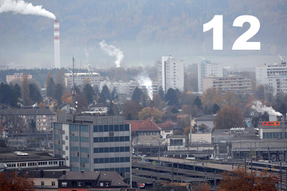

Monatliche Schwebestaubbelastung

12 µg/m³ betrug der Feinstaubwert vor einem Jahr in Basel. Feinstaub (PM10), auch Schwebestaub genannt, ist eine Mischung aus kleinsten Teilchen mit weniger als einem Hundertstel Millimeter Durchmesser (10 µm). In der Stadt ist der motorisierte Strassenverkehr einer der Hauptverursacher hoher Feinstaubbelastung. Aufgrund von Massnahmen zur besseren Reinhaltung der Luft sind sie Werte seit den 1990-er Jahren deutlich zurück gegangen.
Weiterführende Infomationen
Umweltbericht beider Basel